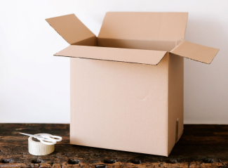
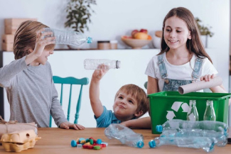
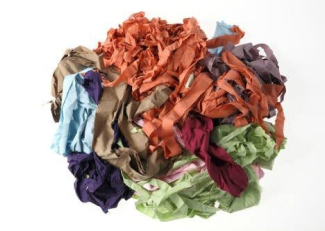
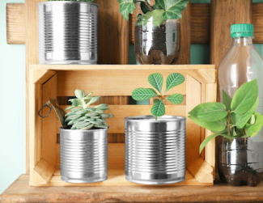

<!DOCTYPE html>
<html>
<!DOCTYPE html>
<html lang="es">

<head>
  <meta charset="UTF-8">
  <meta name="viewport" content="width=device-width, initial-scale=1.0">
  <title>Ecoactualizate</title>
  <link rel="shortcut icon" href="../assets/Logo_1.png" type="image/x-icon">
  <link rel="preconnect" href="https://fonts.googleapis.com">
  <link rel="preconnect" href="https://fonts.gstatic.com" crossorigin>
  <link href="https://fonts.googleapis.com/css2?family=Montserrat:wght@200;300;400;500;600;700;800;900&amp;display=swap"
    rel="stylesheet">
  <meta http-equiv="X-UA-Compatible" content="IE=edge">
  <script defer src="../js/actualizate-item.js" type="module"></script>
  <link rel="stylesheet" href="../css/actualizate-item.css">
  <link rel="stylesheet" href="../css/actualizate.css">
  <link rel="manifest" href="/manifest.json">

  <meta name="mobile-web-app-capable" content="yes">
  <meta name="apple-mobile-web-app-status-bar-style" content="black">
  <meta name="apple-mobile-web-app-title" content="EcoNova">
  <!-- Firebase -->
  <script src="https://www.gstatic.com/firebasejs/8.10.1/firebase-app.js"></script>
  <script src="https://www.gstatic.com/firebasejs/8.10.1/firebase-auth.js"></script>
</head>

</html>

<body>
  <!-- **************** Navbar **************** -->
  <section class="navbar-dark">
    <div class="navbar-container container">
      <a class="branding" href="../index2.html">
        
        <h3 class="h3 branding__title">EcoNova</h3>
      </a>
      <button class="menu-toggler">
        
      </button>
      <nav class="nav-menu">
        <ul>
          <li><a class="link" href="./index2.html">Inicio</a></li>
          <li><a class="link link--active" href="./actualizate/actualizate-usuario.html">EcoGuia</a></li>
          <li><a class="link" href="../chatbot.html">Chatbot</a></li>
          <li><a class="link" href="../nosotros/nosotros-usuario.html">Nosotros</a></li>
        </ul>

        <!-- Botón y perfil -->
        <div class="nav-menu__button" style="position: relative;">
          <div id="userProfileArea">
            
            <span id="userName" class="user-name"></span>
            <div class="profile-menu" id="profileMenu">
              <a href="#">Editar Perfil</a>
              <a href="#">Configuración</a>
              <a href="#" onclick="cerrarSesion()">Cerrar Sesión</a>
            </div>
          </div>
        </div>
      </nav>
    </div>
  </section>
  <!-- **************** Fin Navbar **************** -->
  <!-- ***************************** HEADER *****************************-->
  <!-- ***************************** FIN HEADER ***************************** -->
  <!-- ***************************** MAIN ***************************** -->
  <main>
    <button class="sidebar-toggler"></button>
    <aside class="sidebar">
      <nav class="sidebar-container">
        <ul>
          <li class="sidebar__section"><a href="../actualizate/residuos-usuario.html">Separacion de residuos</a></li>
          <li class="sidebar__section"><a href="../actualizate/cinco-r-usuario.html">Cinco R Ecológicas</a></li>
          <li class="sidebar__section"><a href="../actualizate/ecodatos-usuario.html">Ecodatos</a></li>
          <li class="sidebar__section sidebar__section--active"><a
              href="../actualizate/recicla-en-casa-usuario.html">Recicla en casa</a></li>
        </ul>
      </nav>
    </aside>
    <section class="contents">
      <article class="contents-container">
        <div class="content__title">
          <h2 class="h2 bold">Materiales reciclables</h2>
          <p class="body light">Recicla en casa</p>
        </div>
        <div class="block-content">
          <div class="block-content__image"></div>
          <h4 class="body extrabold">Carton y papel</h4>
          <ul>
            <li>Las cajas de cartón pueden servir como areneros para gatos. O las cajas grandes de cartón las pueden
              usar tus hijos para crear un coche o un avión. ¡Echen a volar la imaginación!</li>
            <li>Rollos de papel. Píntalos y ocúpalos para guardar cables, pañuelos, ligas para el cabello, incluso,
              podría ser ropa interior.</li>
          </ul>
        </div>
        <div class="block-content">
          <div class="block-content__image"></div>
          <h4 class="body extrabold">Plástios</h4>
          <ul>
            <li>Para reciclar plásticos, en cuanto a las botellas las puedes convertir en macetas cortando la parte
              inferior completamente, metes la tierra y en la tapa de la botella realiza un corte o agujero para que
              cuando las riegues, por ahí se vaya el agua.</li>
            <li>También puedes hacer porta velas con la parte inferior o porta lápices cortando la botella a la mitad.
              En el filo de la parte superior ponle una goma o un listón pegado alrededor para darle un toque lindo y no
              te raspe al momento de meter la mano.</li>
            <li>Los garrafones de plástico de 3 o 5 litros de agua los puedes convertir en comedero de aves. Hazle un
              hoyo mediano en la parte de en medio y listo, introduce el alimento y el ave comerá de ahí. Cuélgalo de la
              tapa en el exterior de tu casa.</li>
            <li>Crea una alcancía haciendo una hendidura en alguno de los lados de la botella, ¡fácil! Puedes decorarla.
            </li>
          </ul>
        </div>
        <div class="block-content">
          <div class="block-content__image"></div>
          <h4 class="body extrabold">Tela</h4>
          <ul>
            <li>Con la ropa que ya no usarás puedes crear juguetes para mascotas, quizá algún muñeco para que tu perro
              la muerda y jale.</li>
            <li>Con los calcetines podrás hacer títeres, solo rellénalos, ponle ojos de botón y con otros trozos de tela
              has el cabello y la boca</li>
            <li>Con un pantalón viejo puedes hacer tu propia bolsa de mezclilla, corta el pedazo elegido y a coser.</li>
          </ul>
        </div>
        <div class="block-content">
          <div class="block-content__image"></div>
          <h4 class="body extrabold">Aluminio</h4>
          <ul>
            <li>También, al igual que las botellas de plástico, las latas de aluminio las puedes convertir en macetas.
              Retira una parte de la lata, la parte que quedará abajo hazle unos cinco hoyos para que por ahí se escurra
              el agua cuando las riegues, y listo, tierra y la planta de tu elección.</li>
            <li>Puedes convertir las latas que son de frutas en almíbar, por ejemplo, en lapiceros o el recipiente para
              colocar los cubiertos.</li>
            <li>Si unes varias latas de tamaño mediano a grande, puedes crear un porta vinos. Cada lata será el espacio
              para colocar una botella.</li>
          </ul>
        </div>
        <div class="content__title">
          <h2 class="h2 bold">Trucos y tips para reciclar</h2>
          <p class="body light">Recicla en casa</p>
        </div>
        <div class="block-content">
          <h4 class="body extrabold">Lee las etiquetas y envases</h4>
          <p>La información sobre reciclaje disponible en etiquetas y envases es muy útil en los plásticos, que tienen
            un código especial que indica el material o mezcla de materiales utilizados en su fabricación. En algunos
            casos, la etiqueta también nos indica en qué contenedor debemos depositar un envase.</p>
          <h4 class="body extrabold">Separa los residuos en recipientes independientes</h4>
          <p>El primer paso para reciclar en casa es disponer de recipientes independientes para cada tipo de residuo.
            Esta acción es sencilla y facilita mucho la clasificación, aunque requiere espacio, un solo cubo con
            separadores es suficiente.</p>
          <h4 class="body extrabold">Deposita los residuos en el contenedor correspondiente</h4>
          <p>Esta acción facilita que los residuos se incorporen antes a la cadena de reciclaje. Localiza la zona de
            contenedores más cercana a tu vivienda para hacer más fácil el proceso.</p>
          <h4 class="body extrabold">Aprende qué hacer con los residuos especiales</h4>
          <p>Los residuos especiales como aparatos electrónicos o muebles se depositan en los puntos limpios. Las pilas
            y el aceite de cocina tienen sus contenedores específicos. Lo mismo ocurre con los medicamentos, que no
            puedes tirar a la basura por su toxicidad y que debes dejar en uno de los puntos situados en algunas
            farmacias.</p>
          <h4 class="body extrabold">Limpia los envases de comida antes de tirarlos al contenedor</h4>
          <p>Otro consejo básico es limpiar los envases de comida como latas o botes antes de llevarlos al contenedor.
            En el caso de las botellas de aceite o los envases de productos cosméticos y de limpieza no deben enjuagarse
            antes de su reciclaje para evitar vertidos químicos o tóxicos en el agua.</p>
          <h4 class="body extrabold">Recicla el aceite de cocina</h4>
          <p>Uno de los problemas habituales al reciclar en casa es qué hacer con el aceite usado. Este residuo debe
            depositarse en un contenedor especial y nunca tirarse por el inodoro o por la pila de la cocina. Un consejo
            para reciclar este aceite es almacenarlos en botes de vidrio que, una vez llenos, llevaremos a un punto de
            recogida.</p>
        </div>
      </article>
    </section>
    <button class="scroll-top-btn"></button>
  </main>
  <!-- ***************************** FIN MAIN ***************************** -->
  <!-- ***************************** FOOTER ***************************** -->
  <footer>
    <section class="footer">
      <div class="footer-container container">
        <div class="footer-social">
          <h3 class="h3 h3-upper extrabold">EL FUTURO NO ES DESECHABLE</h3>
          <div class="footer-social__container"><a href="https://api.whatsapp.com/send?phone=5535547450"></a><a
              href="yahiralexisbalbuenanorve@gmail.com"></a></div>
        </div>
        <div class="footer-branding"><a class="footer-branding__container" href="#">
            <p class="body bold">EcoNova</p>
          </a></div>
      </div>
    </section>
  </footer>
  <!-- ***************************** FIN FOOTER ***************************** -->

  <script src="/assets_inicio/js/firebase.js"></script>
</body>

</html>